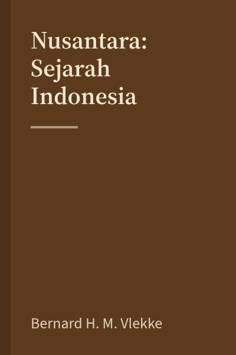
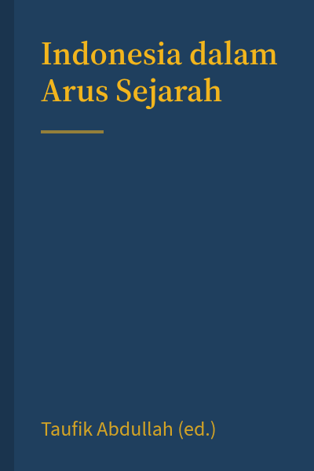
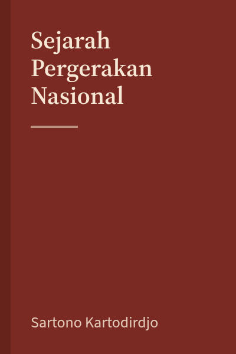
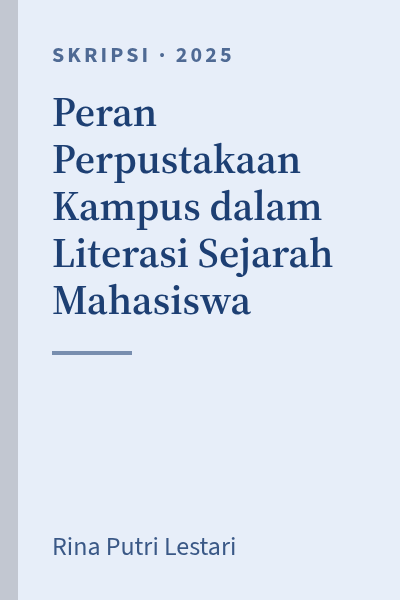

6 hasil untuk "sejarah indonesia" Bahasa Indonesia ×

Buku
Sejarah Indonesia Modern 1200–2008
Serambi, 2008 · 864 hlm. · 959.8 RIC s
Tersedia 2 dari 3 Rak 3B

Buku
Nusantara: Sejarah Indonesia
KPG, 2008 · 560 hlm. · 959.8 VLE n
Dipinjam s.d. 12 Nov 1 antrean

Buku · Novel
Bumi Manusia
Lentera Dipantara, 2005 · 535 hlm. · 899.221 TOE b
Tersedia Rak 2B

Referensi
Indonesia dalam Arus Sejarah (Jilid 1–9)
Ichtiar Baru van Hoeve, 2012 · R 959.8 IND
Baca di tempat Koleksi Referensi

E-book
Sejarah Pergerakan Nasional
Gramedia, 1990 · PDF · E-959.8 KAR
Akses online Khusus anggota

Repositori · Skripsi
Peran Perpustakaan Kampus dalam Literasi Sejarah Mahasiswa
S1 Ilmu Sejarah, 2025 · 112 hlm. · SKR-2025-0412
Teks lengkap PDF 2,4 MB